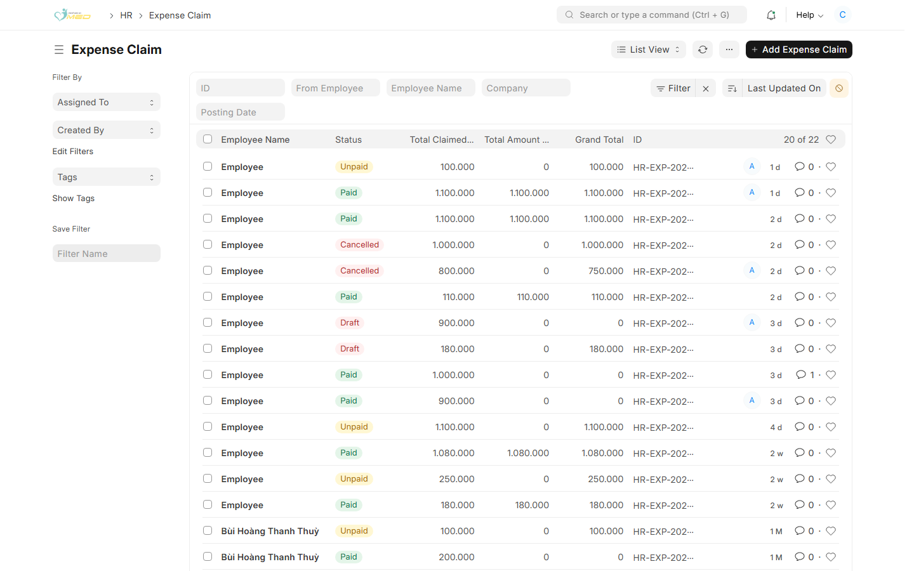
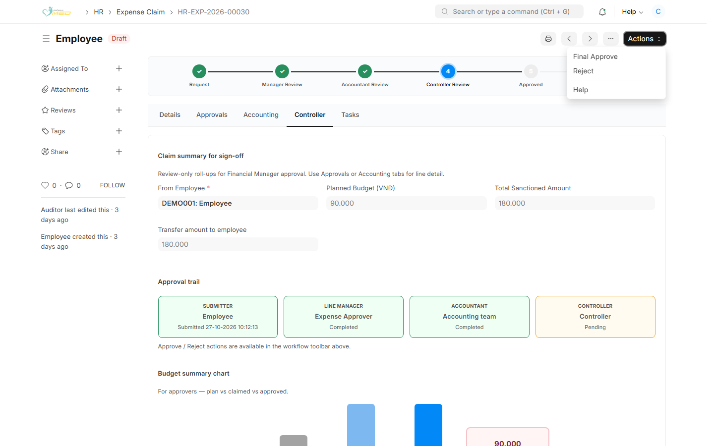

Mục đích
Bạn duyệt cuối sau khi Kiểm Toán đã chọn Approve for Controller. Bước Controller Review đang sáng thì phiếu đang chờ bạn. Đây là bản tóm tắt để ký, không sửa từng dòng chi phí.
Xem tóm tắt
Bước 1: Mở danh sách
Vào HR → Expense Claim. Mở phiếu đang chờ duyệt cuối.

Bước 2: Tab Controller
Phiếu mở tab Controller. Xem:
- Claim summary for sign-off — nhân viên, Planned Budget (VND), Total Sanctioned Amount (Tổng số tiền được phê duyệt), Transfer amount to employee
- Approval trail — người gửi, người duyệt và Kiểm Toán đã Completed. Kiểm Soát Trưởng đang Pending
- Budget summary chart — so kế hoạch, số kê khai và số duyệt
Chi tiết dòng nằm ở tab Approvals hoặc Accounting.
Duyệt cuối
Mở Actions:
- Final Approve — duyệt xong. Thanh quy trình tới Approved
- Reject — trả phiếu và ghi lý do

Sau Final Approve: Nếu còn số phải trả hoặc phải thu, mở tab Tasks để tạo việc cho Kiểm Toán. Kiểm Toán nộp Payment Entry theo hướng dẫn chi sau khi duyệt.